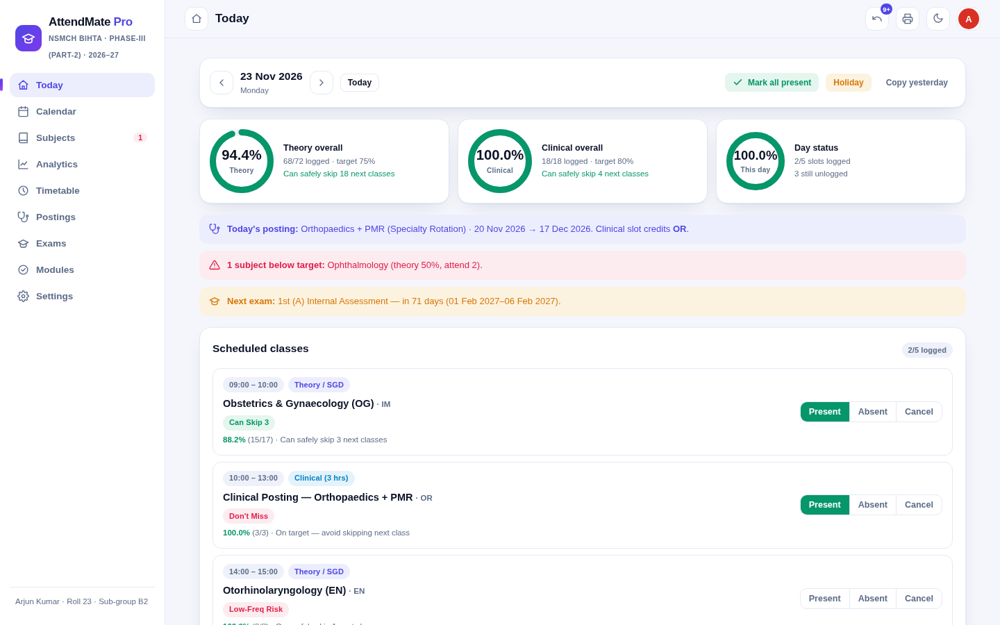
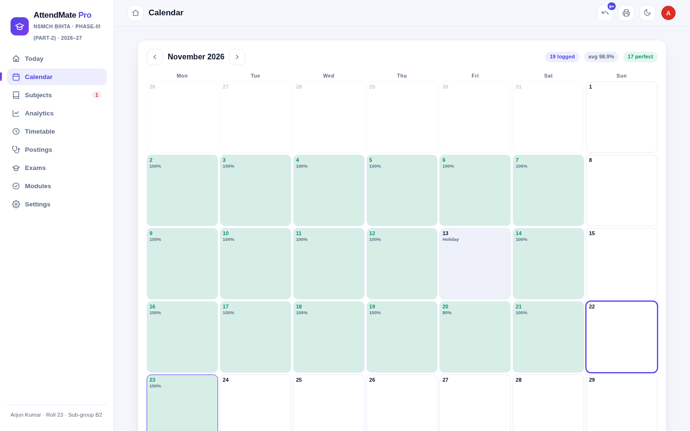

Attendance, engineered for medical school.
AttendMate Pro turns the official NSMCH Phase-III (Part-2) timetable and posting roster into a private, offline command centre — know exactly which classes you can skip, which you can't, and where every posting takes you next.
Answers before you ask the question
Three decisions every medical student faces daily — can I skip, what should I prioritise, and where am I supposed to be? AttendMate Pro answers all three with numbers, not vibes.
Roster resolver
Type your roll number once — A1–F4 resolution maps every allied, specialty and major clinical posting block with dates, straight from the official Phase-III (Part-2) schedule.
Safe-bunk planner
Exact "can skip N classes" and "must attend N" math per subject, separately for theory (75%) and clinical (80%) modes — including the % cost of the very next miss.
Priority advisor
Every subject is auto-tiered into Don't Miss / Be Careful / Safe to Miss as your data grows, so morning triage takes seconds — even on a six-hour clinical day.
A dashboard that follows your real week
Built around the master Monday–Saturday timetable (9 AM – 5 PM), the 75% / 80% rules and the official posting calendar. The screenshots below run on demo data.



Three steps to total clarity
Set-up takes under a minute. After that, marking a day is two taps.
Sign in with Gmail + roll number
A local, Google-style sign-in saves your name, email and roll number in this browser only — and your roll instantly resolves your posting sub-group.
Mark each day in seconds
Today's view follows the master timetable: tap Present / Absent per class, mark all present, declare holidays, bulk-fill past days or add make-up classes.
Follow the advice
Check the advisor before you bunk: exact safe skips left, or how many classes you must attend to recover a target.
Stop guessing. Start knowing.
Open the dashboard, sign in with your Gmail and roll number, and let AttendMate Pro do the attendance arithmetic for the rest of the session.
Open the dashboard